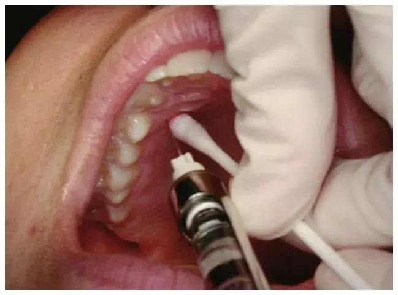
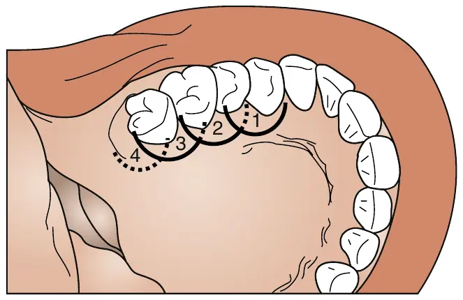

نسخه استخراجشده؛ ترجمه یا تأیید علمی انجام نشده است. وضعیت: captured
هنگام گذاشتن کلمپ رابردم روی پرمولر اول بالا، لثهی پالاتال زیر فک کلمپ درد میگیرد. دندان با تزریق باکال بیحس شده است. برای همین یک نقطه، بلاک کامی لازم است؟

نه. برای ناحیهی کوچک، اینفیلتراسیون کام کافی است. این تزریق شاخههای انتهایی عصبهای نازوپالاتین و پالاتین بزرگ را بیحس میکند و فقط بافت نرم نزدیک محل تزریق بیحس میشود.
برای هموستاز، آنقدر تزریق کن که ایسکمی کل ناحیهی جراحی را بگیرد. برای ناحیهی بزرگتر، سوزن را در لبهی بافتی که تازه بیحس شده دوباره وارد کن و تزریقهای همپوشان را تا پوشش کل ناحیه ادامه بده. در تزریقهای بعدی بیحسی سطحی لازم نیست.

نکتهی طلایی: کام کانین و پرمولر اول از هر دو عصب فیبر میگیرد. اگر پس از هر یک از دو بلاک این ناحیه هنوز حس داشت، یک اینفیلتراسیون کوتاه همانجا بیحسی را کامل میکند.